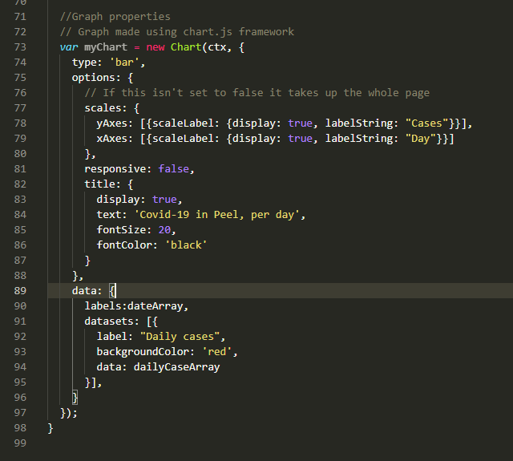

Covid Dashboard
The Scenario
I built the Peel COVID-19 dashboard at the height of the second wave of the pandemic as my passion project for my Javascript course. Having experience working with data and modelling during my undergraduate program, I wanted to try extracting data from a public data-source and see what kinds of analysis I could do using Javascript. As this was done in the first semester of my web development program, I had a rather limited experience making requests to servers and interpreting the JSON sent back. I also live in Mississauga, a city located within Peel region notable for struggling with the highest caseloads of any other region in Ontario during the pandemic. A dashboard for Peel region was thus a suitable challenge I could work towards.
Getting the data
Whenever I worked with data before I used data that was already packaged nicely into files already on my computer, usually in a CSV (Comma-separated values) format. I would then read these files using either MATLAB or Java. This of course does not work when you want to display data that changes every day. I needed a way to get fresh data every time a client visited the web page. I also needed to find a reputable data source for COVID data, my first instinct being the Ontario government.
A quick google search later and I find https://data.ontario.ca/ which provides easy access to a wide variety of data the province collects. I looked up a dataset of COVID19 cases which I can use for the dashboard and came upon the set pictured below.
A handy button on this website provides methods of accessing the data by making a GET request to the API. I initially tried using the code provided using jQuery but would get server issues due to the way jQuery creates the GET request URL.
I improvised by looking up what a JSONP request was and noticed that it was a JSON object inserted as a parameter in a function which I could name by adding ‘callback=myCallback’ into the request URL. I could then access the data by inserting a script tag under my Javascript file into my homepage with the source attribute pointing to the API endpoint. Accessing the data was then as easy as creating a function called ‘myCallback’ that used the data provided by the dataset.
Optimizing the request
My next problem was that the dataset was too large and would slow down the webpage when I tried looking for daily totals for Peel region. This was because the dataset showed the status of all the people who tested positive for COVID in Ontario. Calculating daily totals thus required a loop to go through the data and add up all the cases associated with Peel region every day during the pandemic. This was computationally expensive as it required searching the entire set for every day in the pandemic.
At first, I tried solving the problem programmatically, thinking a better algorithm would speed the search. I tried adjusting the code, but it would not speed it up, so I wondered if there was a better way. I looked through the data portal again and found a different dataset that provided the daily totals per public health region in Ontario. This eliminated the most programmatically task on the website since I could then just access the totals within a simple JSON object instead of having to do any searches.
Plotting the data
My final problem was that I did not know how to plot data using Javascript. I knew how to do it in MATLAB really easily by using “plot(x, y);)”. Javascript does not have integrated plotting functions so I had to look for a library that could do it. At first, I opted for D3.js but quickly discovered that learning to use it would take more time than I had available. I then landed on chart.js, which provides an easy way to create graphs using an object-oriented interface. I found this to be more intuitive to use and the code was easier to use as well. Customizing the chart was as easy as just modifying the options object.
The other benefit that chart.js brought is the chart is interactive and allows users to hover over bars and see their value. The final graph is beautiful and gives users the ability to easily explore the data in an intuitive manner.
Final Result (Up to now)
Googling. Is. Essential. This project had a lot of pitfalls for a new web developer which would be difficult to solve without having prior experience. Knowing how to search for answers to questions we will inevitably encounter as developers is crucial. I would not have known how to figure out how to access the data if I had just used the suggested Javascript code on Ontario’s website. Knowing about what JSONP was, allowed me to craft a workaround.
I am currently expanding this website to include a backend that allows users to choose which region to see data for. Adding a backend also allows me to modify my code so it only makes one call to the databank a day and storing the data in a database instead of having it make a call for every user who visits the page.
As of now the page provides some simple calculations like active cases/100,000 which shows how prevalent COVID is within a community, and the total cases for the region. Things are getting better in Peel region as shown by the yellow “caution” indicator.